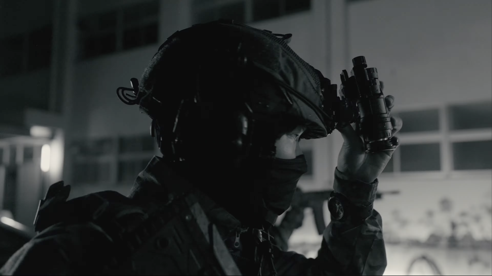
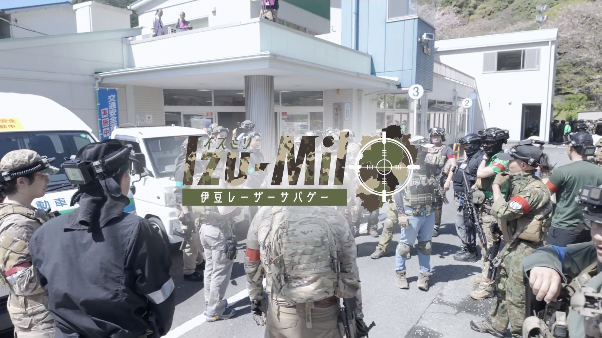
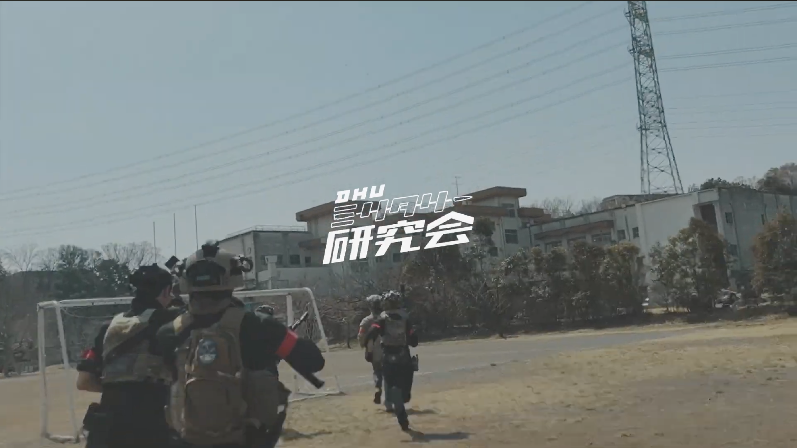
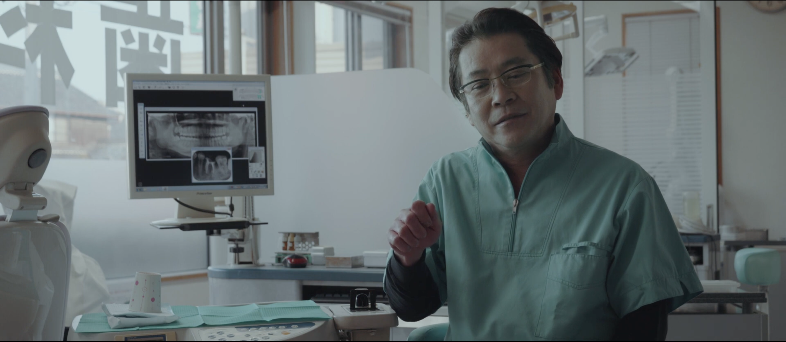
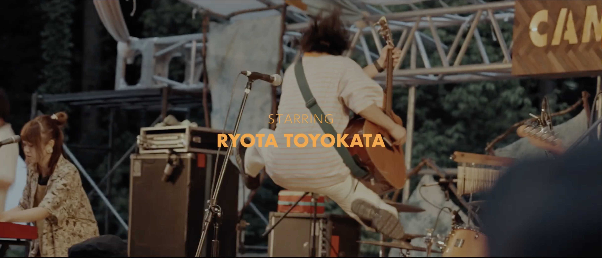
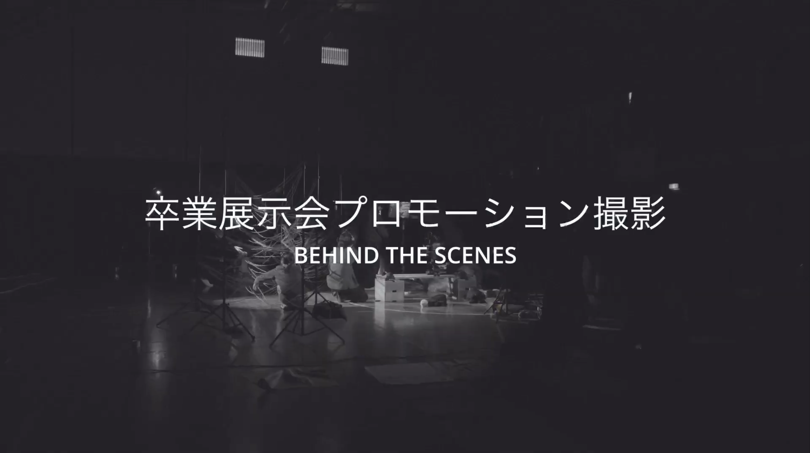
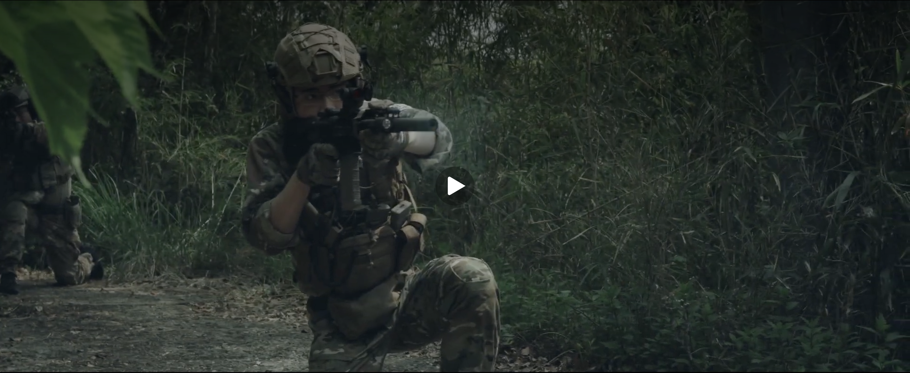

作品

Izumil Vol.2 NV PV
ナイトビジョンは高価で崇高されがちなので、重厚な雰囲気になるように音楽を選定。またSNS用の動画なので、最初にフックを設けた。

Izumil. vol.1 PV
地域おこしを行う団体のイベントPVなので、サバゲーマー以外の方にもみていただける動画を意識して制作。

ミリ研ファスガンVOl.1 PV
サークルイベント用の動画。大学の施設である八王子キャンパスを存分に生かしたことがわかり、尚且つダイナミックな動画になるよう意識して制作。

Behind the Wheels
同じく車好きな親父の還暦祝いに撮った動画。その日に思い立ち、撮影時間は1時間。

Behind the Scenes of the CAMPASS
イベントプロモーターの方を追った映像。自分も知らなかった少し有名なイベントをより有名にできるような動画に。

Digital Hollywood 2024 Graduation Exhibition CM BTS
同じ大学生が試行錯誤しながら映像を作っていく様を追った。

AOMS PV 2024
実際やっていることではなく、「このようなことが好きなんだ」というものを表現した。
使ったプロンプト
ここにプロンプトを貼ります